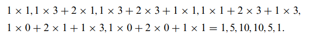
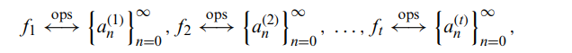
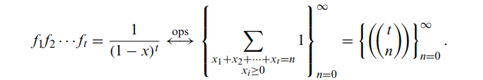

Multiplying Power Series在上一个例子中，我们通过take derivative的TRICK构造了生成函数。1(1−x)2⟷ ops {n+1}n=0∞.\frac{1}{(1-x)^{2}} \stackrel{\text { ops }}{\longleftrightarrow}\{n+1\}_{n=0}^{\infty}.(1−x)21⟷ ops {n+1}n=0∞.聪明的读者自然也会想到，如果我们尝试用乘法是不是也可以得到相应的结果？也就是对于右边(1+x+x2+⋯ )(1+x+x2+⋯ )=1+2x+3x2+⋯+(n+1)xn+⋯? \left(1+x+x^{2}+\cdots\right)\left(1+x+x^{2}+\cdots\right)=1+2 x+3 x^{2}+\cdots+(n+1) x^{n}+\cdots ? (1+x+x2+⋯)(1+x+x2+⋯)=1+2x+3x2+⋯+(n+1)xn+⋯?Convolution（卷积）DEF对于f⟷ ops {an}n=0∞,andg⟷ ops {bn}n=0∞.f \stackrel{\text { ops }}{\longleftrightarrow}\left\{a_{n}\right\}_{n=0}^{\infty}, and g \stackrel{\text { ops }}{\longleftrightarrow}\left\{b_{n}\right\}_{n=0}^{\infty}.f⟷ ops {an}n=0∞,andg⟷ ops {bn}n=0∞.我们有fg⟷ ops {cn}n=0∞f g \stackrel{\text { ops }}{\longleftrightarrow}\left\{c_{n}\right\}_{n=0}^{\infty}fg⟷ ops {cn}n=0∞其中cn=a0bn+a1bn−1+⋯+anb0=∑r=0narbn−rc_{n}=a_{0} b_{n}+a_{1} b_{n-1}+\cdots+a_{n} b_{0}=\sum_{r=0}^{n} a_{r} b_{n-r}cn=a0bn+a1bn−1+⋯+anb0=∑r=0narbn−rEX The convolution of 1, 2, 1 and 1, 3, 3也就是推广对于我们有f1…ft⟷ ops {cn}n=0∞f_{1} \ldots f_{t} \stackrel{\text { ops }}{\longleftrightarrow}\left\{c_{n}\right\}_{n=0}^{\infty}f1…ft⟷ ops {cn}n=0∞其中cn=∑n1+n2+⋯+nt=nan1(1)an2(2)⋯ant(t)c_{n}=\sum_{n_{1}+n_{2}+\cdots+n_{t}=n} a_{n_{1}}^{(1)} a_{n_{2}}^{(2)} \cdots a_{n_{t}}^{(t)}cn=∑n1+n2+⋯+nt=nan1(1)an2(2)⋯ant(t)Corollary 9.20 推论9.201(1−x)t⟷ ops {((tn))}n=0∞\frac{1}{(1-x)^{t}} \stackrel{\text { ops }}{\longleftrightarrow}\left\{\left(\left(\begin{array}{l}t \\ n\end{array}\right)\right)\right\}_{n=0}^{\infty}(1−x)t1⟷ ops {((tn))}n=0∞Proof结合4.4 Combinations of Multisets and Counting Integer Solutions，我们不难有